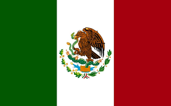

Aduana de México

Funciones de Aduana
la aduana mexicana cumple con la función principal de fiscalizar, vigilar y controlar el ingreso y extracción de
mercancías del país. Gracias a la implementación de Sistema Automatizado Aduanero Integral (SAAI), así como
del Sistema de Selección Automatizado. Fue la Administración General de Aduanas, por medio de los agentes
aduanales, quienes tomaron la responsabilidad de clasificar y otorgarle el valor correspondiente a las
mercancías en la aduana. Debido a que la autoridad ejecutiva pasó a mantener tan sólo la facultad de
verificar el cumplimiento de las disposiciones de la Ley Aduanera, México se ha convertido paulatinamente en
un instrumento ágil y promotor del comercio exterior. Actualmente las aduanas mexicanas cuentan con la
tecnología de punta necesaria para llevar a cabo operaciones de gran escala a nivel global. Con ello se
busca atender eficientemente las necesidades de los usuarios del comercio exterior: importadores,
exportadores, almacenadoras nacionales y demás participantes de la cadena de abastecimiento. Hoy, la aduana
de México es reconocida a nivel mundial como un canal de comercio altamente competitivo y moderno. La gran
cantidad de productos demandados por los mercados internacionales, representan un reto para todos los
agentes de la cadena de suministro. Por ello, en Almer desarrollamos planes integrales de logística para
mejorar el flujo desde el almacenamiento hasta la distribución de los bienes a nivel nacional e
internacional.
| Exportación |
Importación |
| Coches |
Circuitos Integrados |
| Ordenadores |
Vehiculos de motor, Piezas y Accesorios |
| Vehiculos de moto, Piezas y Accesorios |
Petrolio Refinado |
| Camines de Entrega |
Piezas de Maquinas de Oficina |
| Petrolio Crudo |
Telefonos |
Importación y Exportación
| Aduanas |
| Aduana de Acapulco |
Aduana de Altamira |
| Aduana de Colombia |
Aduana de Ciudad de Carmen |
| Aduana de Ensenada |
Aduana de Chetumal |
| Aduana de Coatzacoalcos |
Aduana de Guaymas |
| Aduana de Ciudad Hidalgo |
Aduana de Guanajuato |
| Aduana de Lázaro Cárdenas |
Aduana de Matamoros |
| Aduana de La Paz |
Aduana de Mexicali |
| Aduana de Nuevo Ladero |
Aduana de Salina Cruz |
| Aduana de Tampico |
Aduana de Topolobampo |
| Aduana de San Luis Río Colorado |
Aduana de Ciudad de México |
| Aduana de Veracruz |
Aduana de Manzanillo |
| Aduana de Guadalajara |
Aduana de Cancún |
| Aduana de Mazatlan |
Aduana de Progreso |
| Aduana de Agua Prieta |
Aduana de Ciudad Camango |
| Aduana de Ciudad Miguel Aleman |
Aduana de Chihuahua |
| Aduana de Paraiso |
Aduana de Sonoyta |
| Aduana de Tecate |
Aduana de Ciudad Acuna |
| Aduana de Aguascalientes |
Aduana de Torreon |
| Aduana de Toluca |
Aduana de Reynosa |
| Aduana de Puebla |
Aduana de Nogales |
| Aduana de Piedra Negras |
Aduana de Tijuana |
Aduanas del País
| Aranceles |
Los aranceles es de 13.9% |
Araceles del País